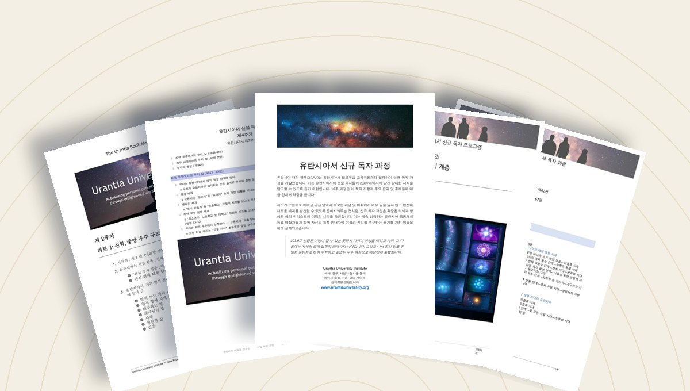
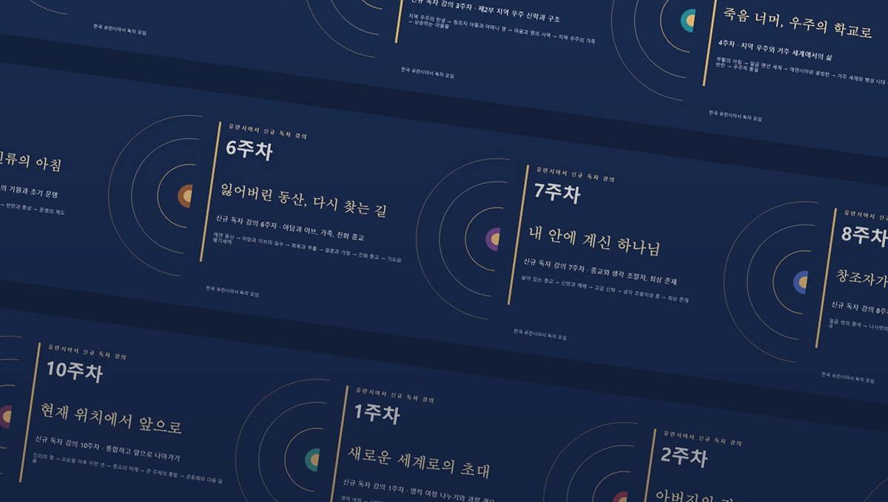

읽으며 공부하기STUDY GUIDE
교안 (PDF)
주차별 교안 열 권. 그 주에 읽을 편과 핵심 개념, 생각해 볼 질문이 정리되어 있어 혼자서도, 모임에서도 공부하기 좋습니다.
- 10주 · 교안 10권
- 내려받기 · 인쇄
- 모임 교재

들으며 공부하기AUDIOBOOK LECTURES
동영상 강의 (오디오북)
주마다 슬라이드 스무 장이 저절로 넘어가며 강의를 읽어 드립니다. 화면을 한 번 누르면 시작되고, 출퇴근길이나 쉬는 시간에 편하게 들을 수 있습니다.
- 10주 · 슬라이드 200장
- 낭독 강의
- 휴대폰에서도
10주 과정1주 새로운 세계로의 초대 · 2주 아버지의 집으로 가는 길 · 3주 우리 우주의 집, 네바돈 · 4주 죽음 너머, 우주의 학교로 · 5주 행성의 새벽, 인류의 아침 · 6주 잃어버린 동산, 다시 찾는 길 · 7주 내 안에 계신 하나님 · 8주 창조자가 사람의 아들이 되다 · 9주 십자가 너머의 아침 · 10주 현재 위치에서 앞으로